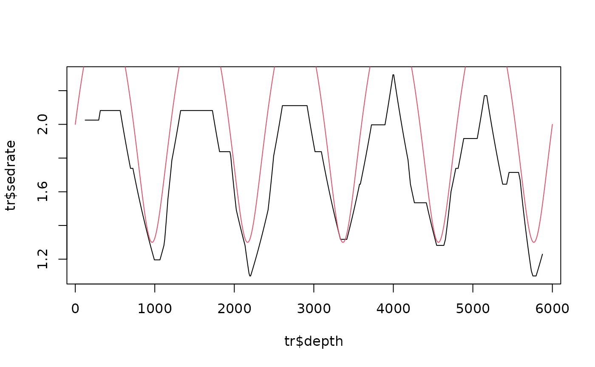

Chirp-steered tracking of the sedimentation rate (rate and rate gradient as the hidden state)
Source:R/track_chirp_hmm.R
track_chirp_hmm.RdHidden Markov tracking on the chirp-matched template scores of analyse_chirp_eha (with
criterion = "template"): the hidden state is the pair (sedimentation rate, relative rate gradient). The
evidence of a window is the match of the astronomical template with the spectrum de-chirped by that gradient, at
that rate; the transition moves the rate by the gradient (log r' = log r + g step) and lets the gradient drift
slowly. The gradient therefore steers the track along the direction the de-chirped evidence points to, and a
change of the rate has to be announced by the chirp of the cycles before the track follows it: a wiggle of the
rate that the spectra support in both its level and its slope is followed, one that the slopes contradict is not.
Arguments
- ce
Evidence to track (required, no default): the result of
analyse_chirp_ehawithcriterion = "template"or ofanalyse_chirp_wavelet(both containtemplate_score_all); or any scalogram of classanalyze.wavelet(analyse_wavelet,analyse_superlet_sst, ...): the evidence oftrack_astro_hmmis then tracked with the gradient as a hidden state (arguments oftrack_astro_hmmsuch asastro_periodsandsedratein..., gradient gridchirp); the evidence then does not depend on the gradient, only the continuity of the rate's slope steers the track.- weight
Weight of the template score of one window against the transition prior (numeric, > 0). On CIP Case 3 (window 20 m, step 0.6 m) the result was the same for 5-20; below 3 the track no longer follows the evidence.
Default=10.- sd_rate
Standard deviation of the change of the rate beyond the move given by the gradient, in octaves (log2 units) per window step (numeric, > 0; at least 0.3 grid bins are used).
Default=0.01.- sd_gradient
Standard deviation of the change of the gradient per window step, in units of the gradient grid spacing (numeric, > 0; at least 0.3 is used).
Default=1.5.- jump_prob
Probability per window step of a jump of the rate to any value (numeric, between 0 and 1; an abrupt change: a hiatus, an erosion surface, a facies change), after which the gradient restarts at zero. A jump is not a gradient: without this the gradient-steered track can only reach a new rate through a ramp. Any value above zero lets the track jump wherever the evidence gains more than the (log) probability: on the synthetic records with three jumps
1e-3halved the age errors, on CIP Case 3 (no jumps) it introduced a few spurious jumps (correlation 0.97 to 0.88), so it is off by default and should be switched on for records with hiatuses or abrupt facies changes.Default=0.- gradient_prior
Standard deviation (in steps of the gradient grid) of a zero-centred Gaussian prior on the gradient, applied at every window (numeric, > 0;
Infmeans no prior). A prior of 3 grid steps lowered the Case 3 result from 0.97 to 0.55 and did not help the records with jumps.Default=Inf.- scalogram
Scalogram (
analyse_waveletetc., orNULLfor none) whosetrack_astro_hmmevidence is added as complementary, local evidence (give the sameastro_periodsinscalogram_args): the windows of the chirp-matched spectra need 15-25 cycles and straddle abrupt changes of the rate, the short wavelets see them; the sum has the sharp lines of the one and the locality of the other.Default=NULL.- scalogram_weight
Weight of the scalogram evidence relative to the template scores (numeric, >= 0; both are scaled by their standard deviation); only used with
scalogram.Default=1.- scalogram_args
Further arguments of
track_astro_hmmfor the scalogram evidence (named list, e.g.list(astro_periods = c(405, 125, 95));sedrateis set to the rate range ofce).Default=list().- n_samples
Number of posterior paths for the credible band (integer). Currently not used: the band is taken from the filtering posterior.
Default=100.- level
Probability content of the credible band of the sedimentation rate (numeric, between 0 and 1, e.g. 0.95 for the 2.5 to 97.5 percentiles).
Default=0.95.- seed
Seed of the random number generator (integer). Currently not used (no random sampling is done).
Default=1.- debias
Remove, for every gradient, the mean score over all rates and windows (logical). The warped windows of a strong gradient have a slightly different noise continuum, which otherwise favours or penalises that gradient everywhere.
Default=TRUE.- chirp
Gradient grid used when
ceis a plain scalogram: relative rate gradients g = d ln(rate) / d depth, per depth unit (numeric vector, should include 0). Ignored for chirp-matched input, which brings its own grid.Default=seq(-0.05, 0.05, by = 0.005).- ...
Further arguments passed to
track_astro_hmmwhenceis a plain scalogram (e.g.astro_periods,sedrate); ignored otherwise.
Value
A wr_track data frame (depth, sedrate, gradient, sedrate_lower, sedrate_upper, confidence10, time,
time_lower, time_upper) with the attribute posterior (depth, sedrate grid, posterior over the rate) and
gradient_grid.
Examples
# \donttest{
set.seed(1)
t <- seq(0, 3000, by = 1)
x_t <- sin(2 * pi * t / 23.7) + 0.6 * sin(2 * pi * t / 19) + 0.8 * sin(2 * pi * t / 41)
sr <- 2 + 0.7 * sin(2 * pi * t / 600)
zt <- c(0, cumsum(sr[-1] * diff(t)))
z <- seq(0, max(zt), by = 1)
x <- approx(zt, x_t, z)$y + rnorm(length(z), sd = 1.5)
ce <- analyse_chirp_eha(data.frame(z, x), window = 250, step = 10, chirp = seq(-0.004,
0.004, by = 0.0005),
lowerPeriod = 10, upperPeriod = 150, criterion = "template",
astro_periods = c(41, 23.7, 19), sedrate = c(0.8, 5))
tr <- track_chirp_hmm(ce)
plot(tr$depth, tr$sedrate, type = "l")
lines(z, approx(zt, sr, z)$y, col = 2)

# }